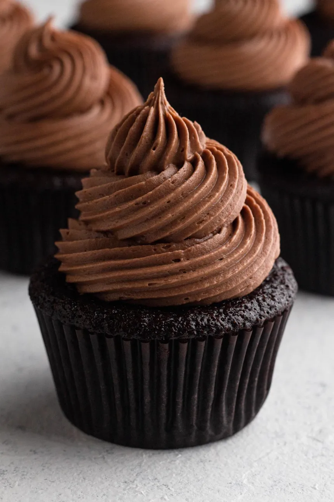

Chocolate Cupcake - Rich and moist chocolate cupcakes.
View RecipeCheesecake Fruit Salad - A creamy fruit salad with a cheesecake twist.
View RecipeTrader Joe's Gone Bananas - Frozen banana bites dipped in chocolate.
View RecipeCream Pie with Gingersnap Crust - A creamy pie with a spicy gingersnap crust.
View Recipe